Version 1.108 is now available! Read about the new features and fixes from December.
The open source
AI code editor
Web,Insiders edition or other platforms
By using vs code, you agree to its license and privacy statement.
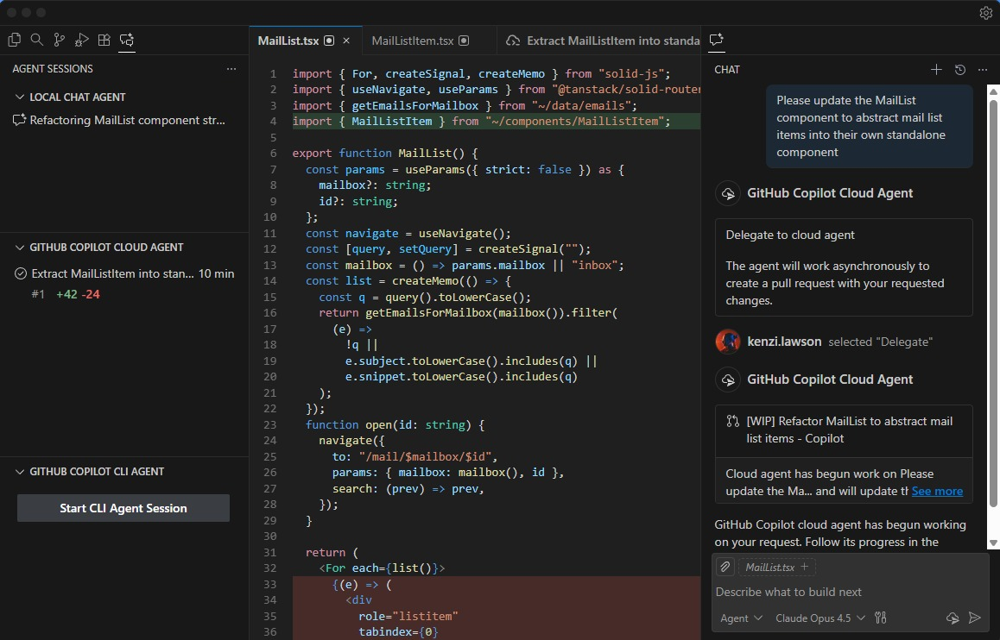
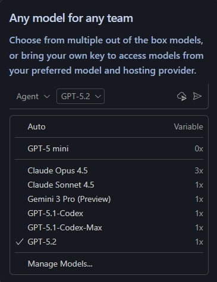
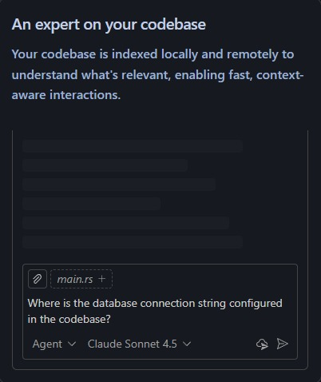
Use AI features in VS Code for free
No trial. No credit card required. Just your GitHub account.
Agent mode
Tackle complex, multi-step tasks. Agent mode
reads your codebase, suggests edits across files,
runs terminal commands, and responds to
compile or test failures — all in a loop until the
job is done. Further refine agent mode to fit your
team's workflows with VS Code extensions and
Model Context Protocol (MCP) servers.
Build with agent mode
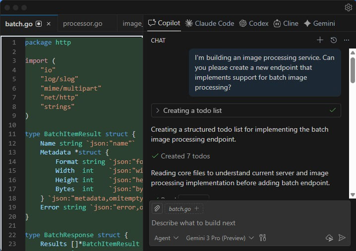
Next edit suggestions
VS Code predicts your next move as you code.
Use the Tab key to accept AI-powered
suggestions right in your editor. It intelligently
recommends what to change — and where —
based on the edits you're already making.
Code with AI-powered suggestions
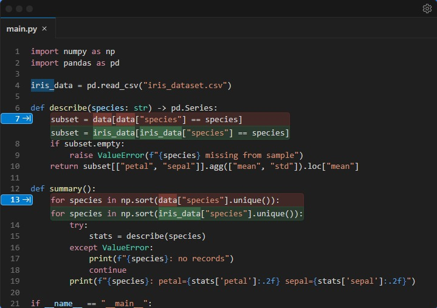
Code with extensions
Customize VS Code with AI-powered
functionality from extensions and Model Context
Protocol servers to use in Chat. Or, build your
own extension to power your team's unique scenarios.
Code with AI-powered suggestions
Python
Adds rich language
support for Python
Stripe
Build, test and use Stripe
inside your editor
C/C++
Adds rich languages
support for C/C++
Juypyter
Language support for
Juypter Notebooks
GitLens
Supercharge your Git
experience
C# Dev Kit
Powerful tools for your C#
environment
MongoDB
Extension for the
@MongoDB agent
Github Copilot for Azure
Streamline the process of
developing for Azure
Remote Developement
Open folders in a
container on a remote
machine
View 80k+ extensions in the Extension Marketplace
Code in any language
VS Code supports almost every major
programming language. Several ship in the box,
like JavaScript, TypeScript, CSS, and HTML, but
extensions for others can be found in the VS
Code Marketplace.
JavaScript
TypeScript
Python
C#
C++
HTML
Java
JSON
PHP
Markdown
Powershell
YAML
Fully customizable
Customize your VS Code UI and layout so that it
fits your coding style.
Color themes let you modify the colors in VS
Code's user interface to suit your preferences and
work environment.
Settings Sync enables you to share your user
settings across your VS Code instances with the
Settings Sync feature.
Profiles let you create sets of customizations and
quickly switch between them or share them with
others.
Code anywhere
Code wherever you're most productive, whether
you're connected to the cloud, a remote
repository, or in the browser with VS Code for
the Web (vscode.dev).
Built-in Source Control empowers you with Git
support out-of-the-box. Many other source
control providers are available through
extensions.
GitHub Codespaces provides cloud-powered
development environments for any activity -
whether it's a long-term project, or a short-term
task like reviewing a pull request.
Code with rich features
There's a lot more to an editor. Whether it's using built-in features or
rich extensions, there's something for everyone.
Integrated terminal
Use your favorite shell whether it's zsh,
pwsh, or git bash, all inside the editor.
Run code
Run and debug your code without
leaving your editor.
Version control
Built-in support for git and many other
source control providers.
Build tasks
Run tools and analyze their results
from within VS Code.
Local history
Never lose your changes with
automatically tracked local history.
Themes
Your theme is an extension of your
personality. Add some flair to your
editor and add your touch.
Accessibility
Optimized experience for screen
readers, high contrast themes, and
keyboard-only navigation.
Web support
Whether you are on your phone,
tablet, or desktop, you can access your
code from anywhere.

 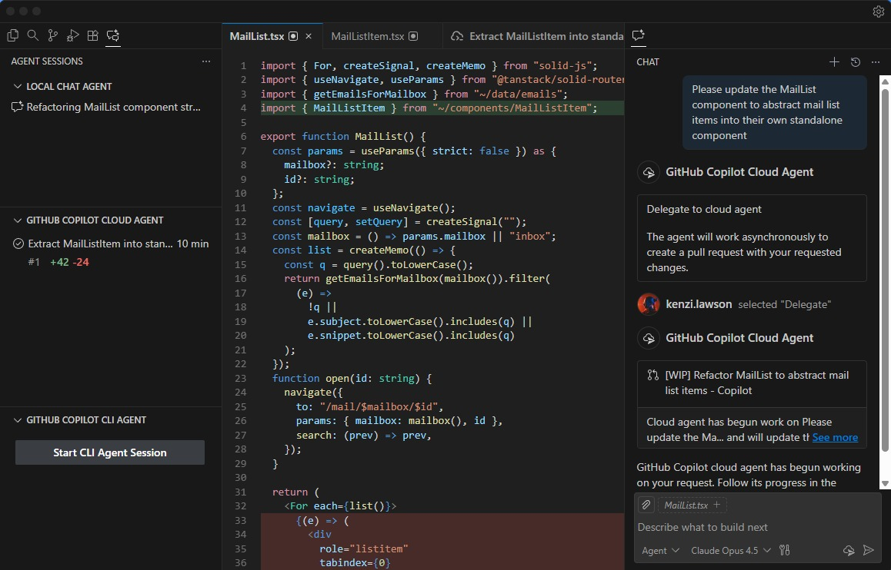
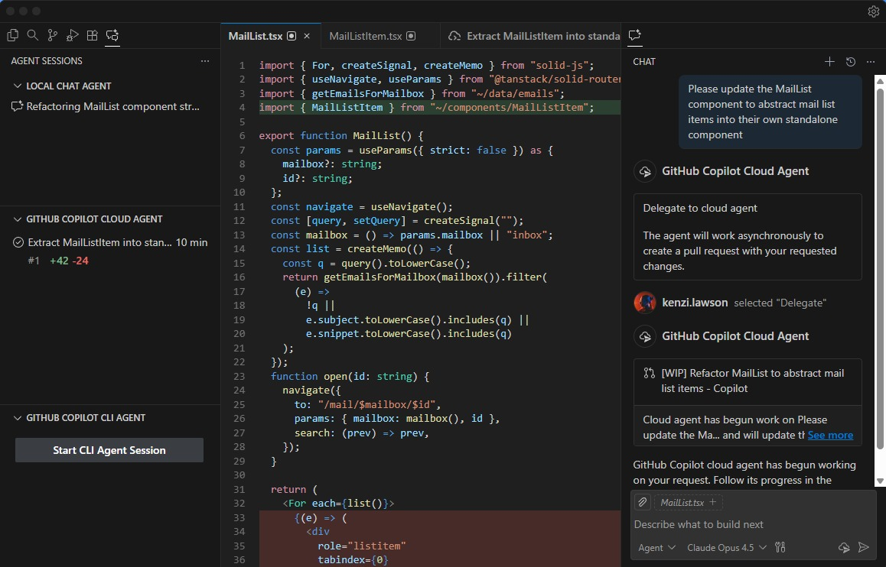


 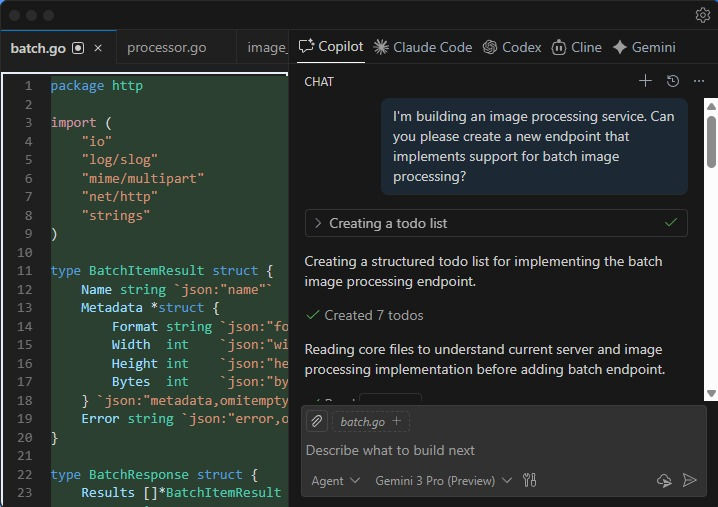
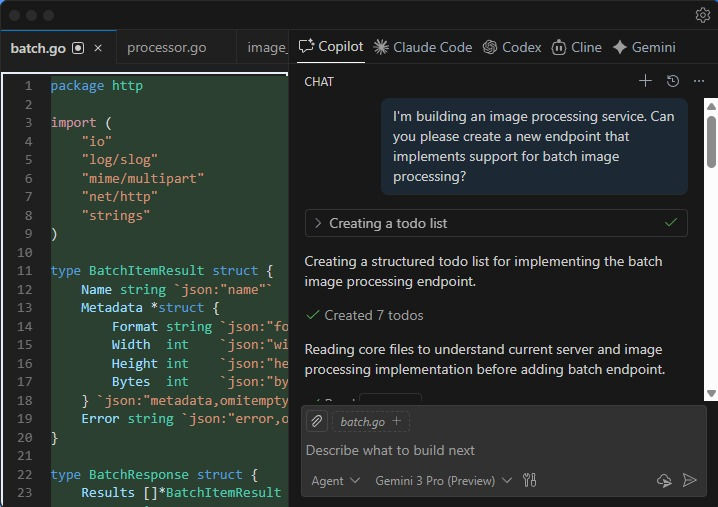
 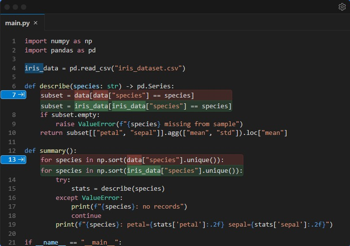
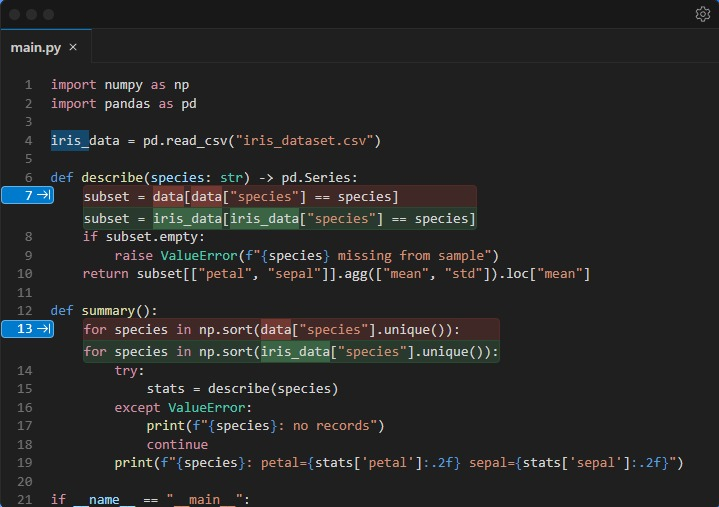